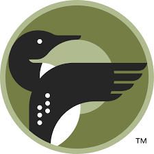
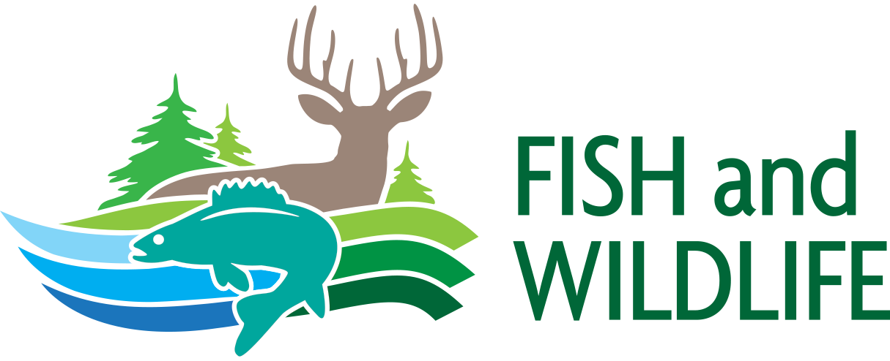
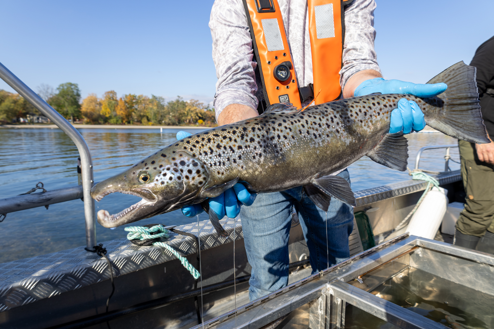

Restoring a native species to its home waters.
Re-establish a self-sustaining population of Atlantic Salmon in Lake Ontario.
Since the program's relaunch in 2006, the Ministry of Natural Resources, in partnership with the Ontario Federation of Anglers and Hunters and over 50 contributing organizations, has made significant investments in fish production, habitat rehabilitation, science, education, and public engagement.
A more focused and efficient program built on lessons learned.
The 2025–2029 Workplan outlines MNR's direction following the 2023 program review. Building on more than 15 years of progress, the plan emphasizes the stocking of advanced life-stage yearlings, increasing adult abundance, and enhancing recreational angling opportunities.
Ontario's Five Priorities
2025 — 2029A Lake-Wide Approach
Working across bordersAtlantic Salmon don't recognize borders — and neither does the recovery effort. Ontario works side-by-side with New York State, the U.S. Fish and Wildlife Service, and federal partners through the Lake Ontario Technical Committee to manage the lake as one system.
Together, partners align on where to stock, what to measure, and how to address the challenges that make natural reproduction difficult. Shared science leads to stronger results for every angler on the lake.
Signs of progress are real. Adult Atlantic Salmon are returning to Ontario's shoreline in growing numbers. More than 300 adults have been captured and sampled over the past three years, giving biologists the best look at this population in a generation.